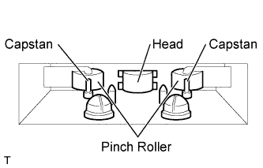

AUDIO AND VISUAL SYSTEM (w/o Multi-display) > Tape is Tangled due to Incorrect Tape Speed or Auto-Reverse Malfunction |
| 1.CHECK FOR FOREIGN OBJECT |
Check for any foreign objects.
Check that no foreign objects or defects are detected in the cassette tape player of the radio receiver assembly.
|
| ||||
| OK | |
| 2.REPLACE CASSETTE TAPE |
Replace the cassette tape with another one and recheck.
Replace the cassette tape with another normal one (90 minutes or less) to see if the same trouble occurs again.
|
| ||||
| OK | ||
| ||
| 3.CLEAN HEAD |
 |
Head cleaning
Raise the cassette door with your finger. Using a pencil or similar object, push in the guide.
Using a cleaning pen or cotton applicator soaked in cleaner, clean the head surface, pinch rollers and capstans.
Check if the same trouble occurs again.
|
| ||||
| OK | ||
| ||